Final 2D version · scopes, amount vs response, and the economic case study (before → after)

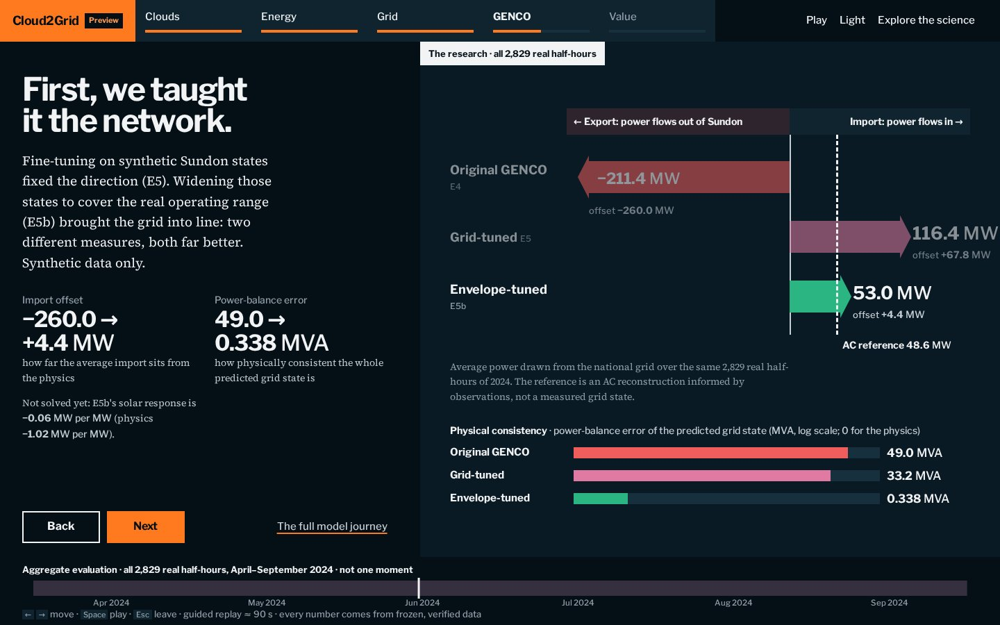


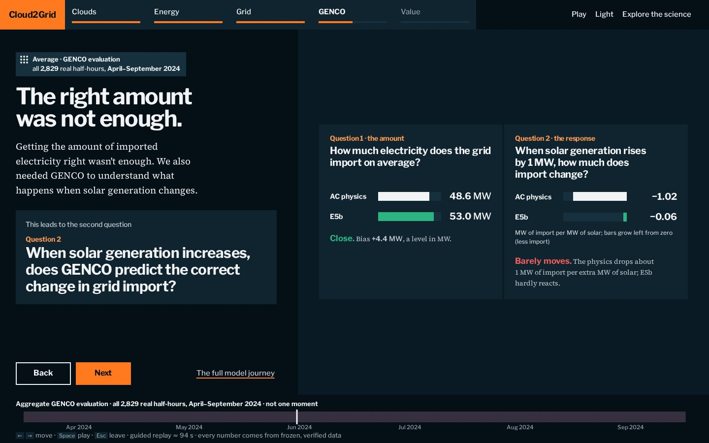


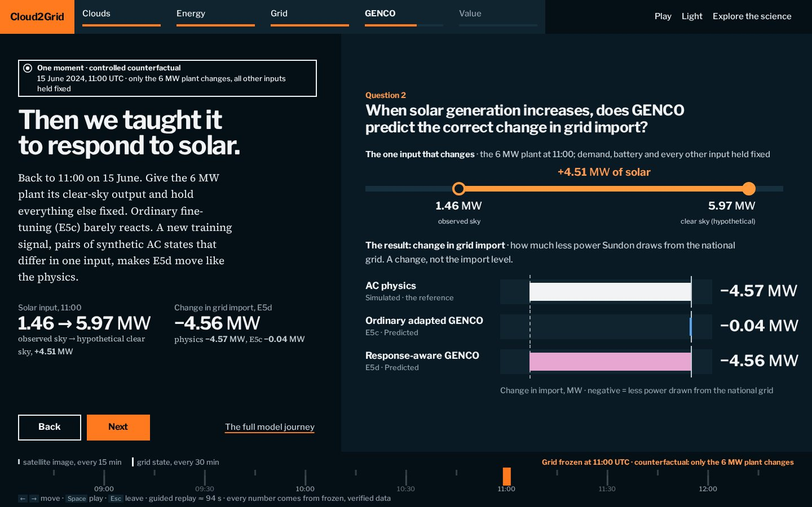

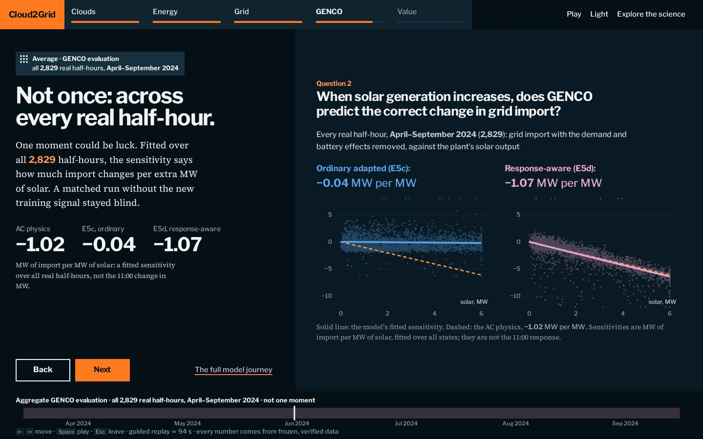

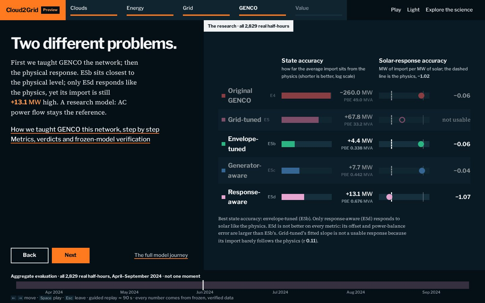


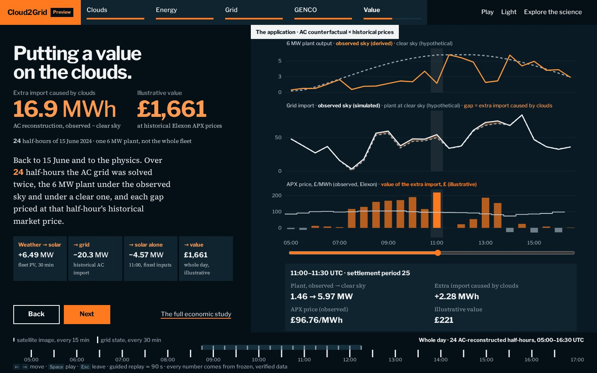


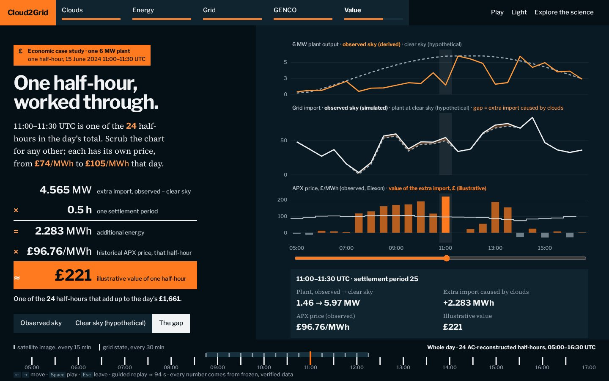

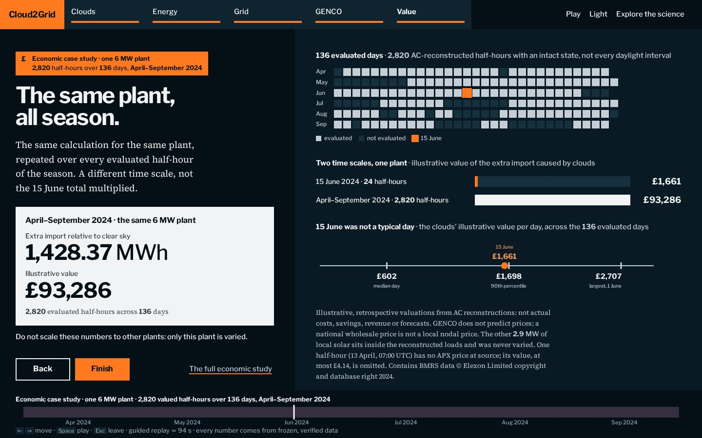

Unedited browser captures (Playwright, Chromium) of the React preview, the original React prototype and the original Streamlit explorer, for independent review. Click any image for the full-size file.
React v2 captured from the live preview, built from development revision 62959a7 (served as gh-pages f826c69), with reduced motion so that each step shows its final state. Desktop 1440 × 900; mobile 390 × 844 (browser emulation, not a physical device).
Live: React v2 preview · React v1 · Streamlit (original, optional). The official Cloud2Grid website is hinox13.github.io/grid2cloud; this is a development preview, not a release.










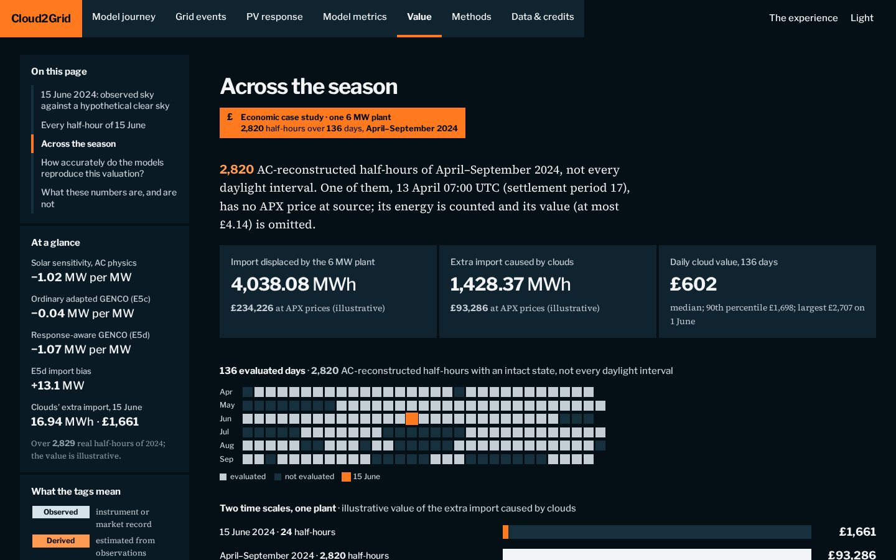
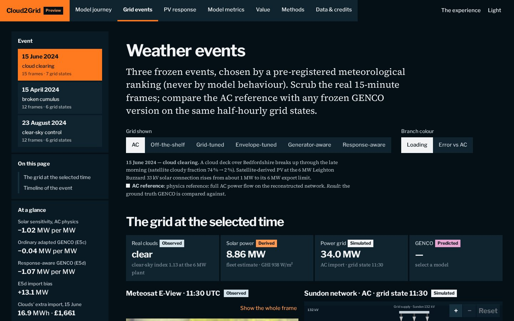


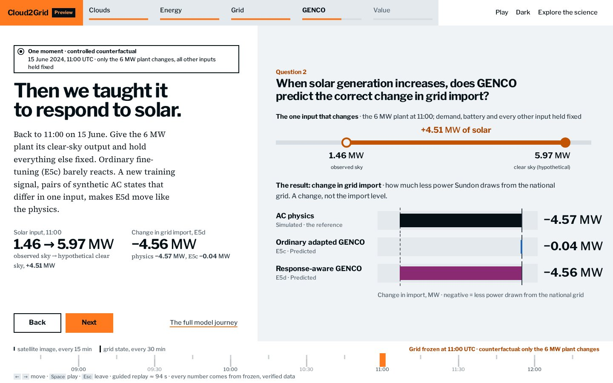
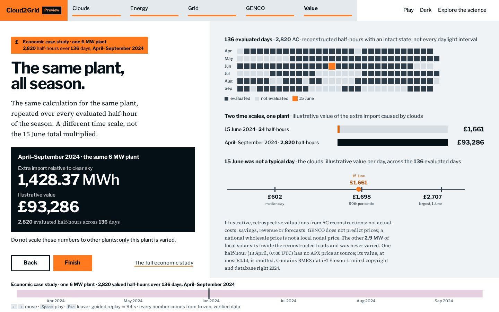
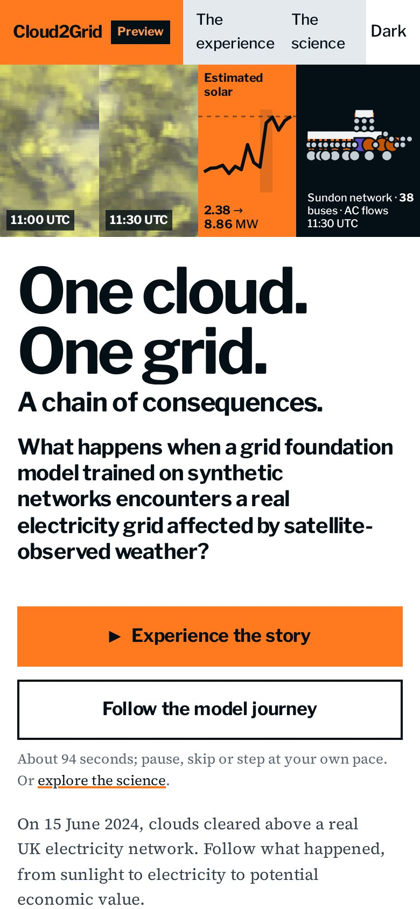
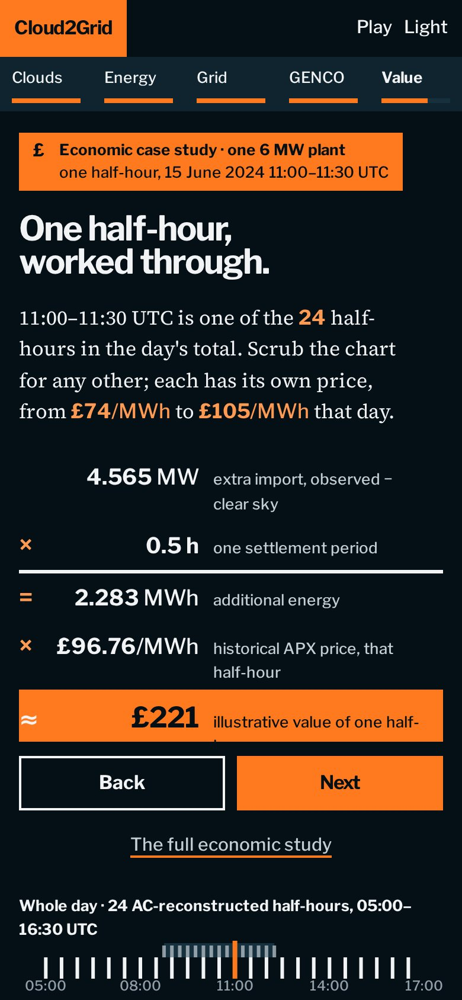
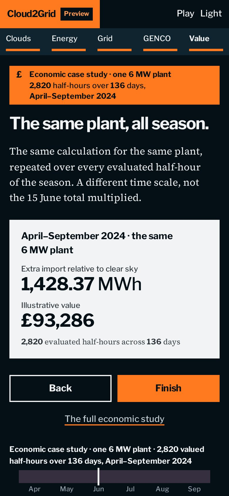


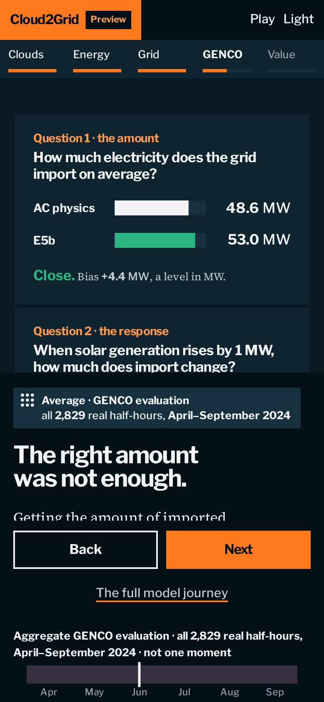
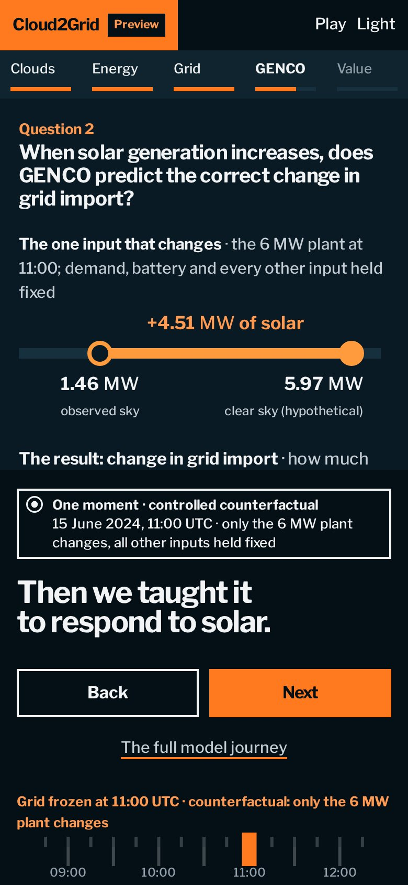
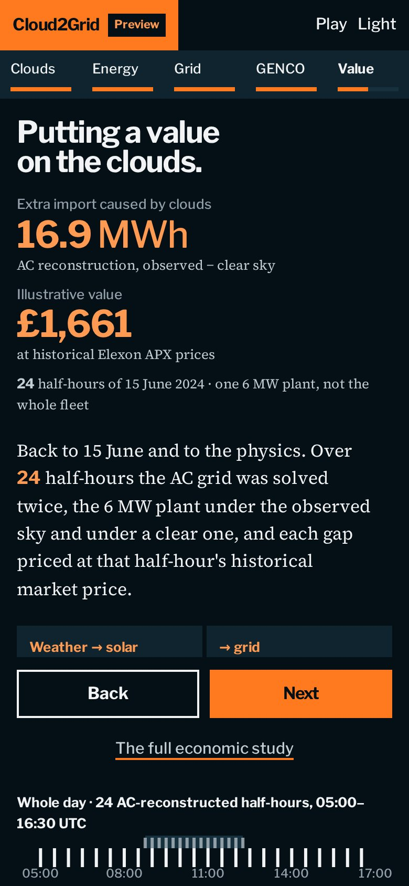